Cantoneses bajo la lluvia, 1977
Retrospectiva y trayectoria pictórica de Melquiades Ramos.
Cantoneses bajo la lluvia, 1977

El balcón, 1977

Habitantes del subsuelo, 1977

Antropología del ser humano, 1978

Los caballos del rey, 1978

Los peces, 1978

Máquina de guerra, 1978

Amanecer rojo sobre la pared, 1980

Los amigos, 1980

Paisaje abstracto, 1980

Estela gráfica, 1982

La pared, 1982
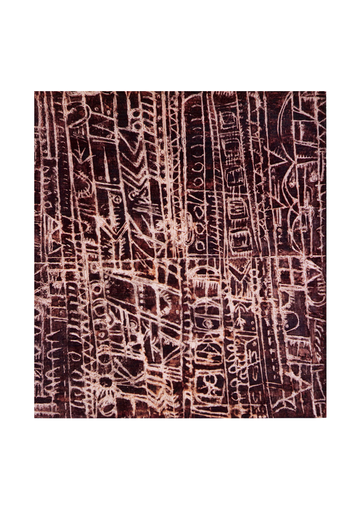
México, 1982

Paisaje de tarde, 1982
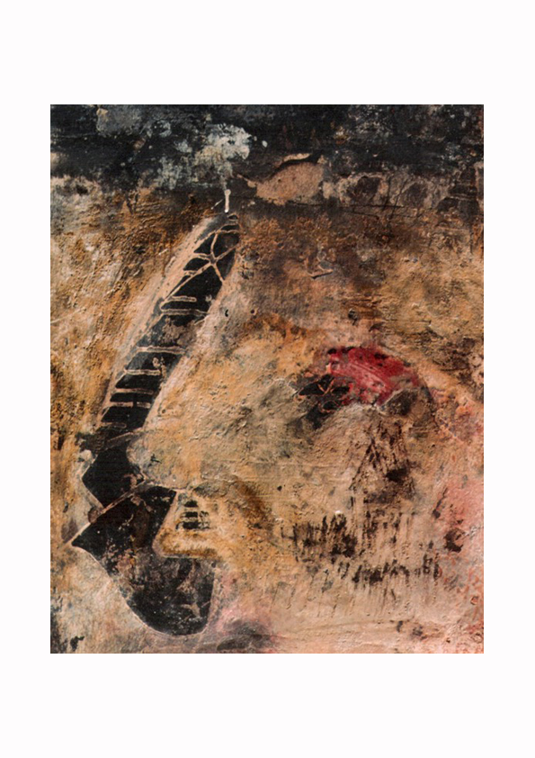
Fálico, 1986
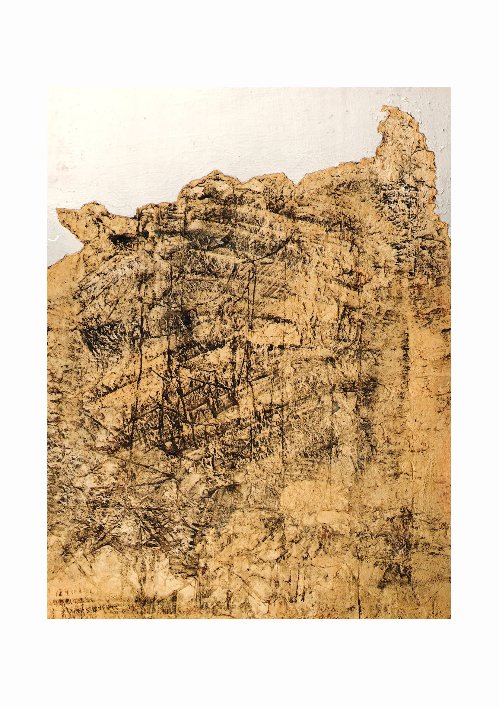
Tepozlan, 1986

Alegoría del abismo, 1990

Autorretrato de espaldas, 1990

Ciudad atacada y barco a la deriva, 1990

El árbol de la vida, 1990

El día del armisticio, 1990

El espectador, 1990

El espíritu del maestro, 1990

El regreso del chamán, 1990

La mujer y el gendarme, 1990

Las cavilaciones del estudiante Torles, 1990

Madrid claro que sí, 1990

Material de sueños, 1990

Posesión 2, 1990
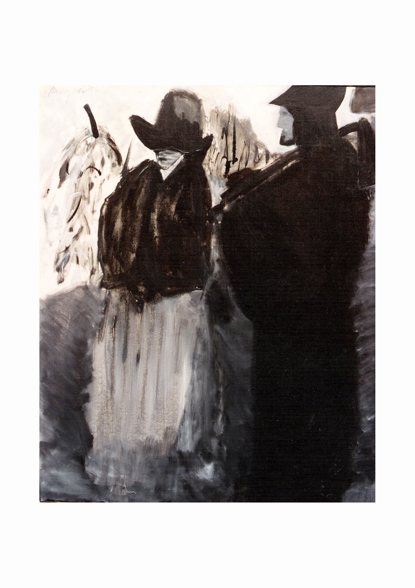
Prosperidad, 1990

Agamenón y el caballo de Troya, 1999

Ariadna en el laberinto, 1999

Buscando a Helena, 1999

Cafetería Lavanda, 1999

Caligrafía Abstracta, 1999

El viaje de Eurídice, 1999

Elevación del cubo, 1999

La mujer del puerto, 1999

La rubia, 1999

El hombre desgarrado, 2002

El Pulpo, 2002
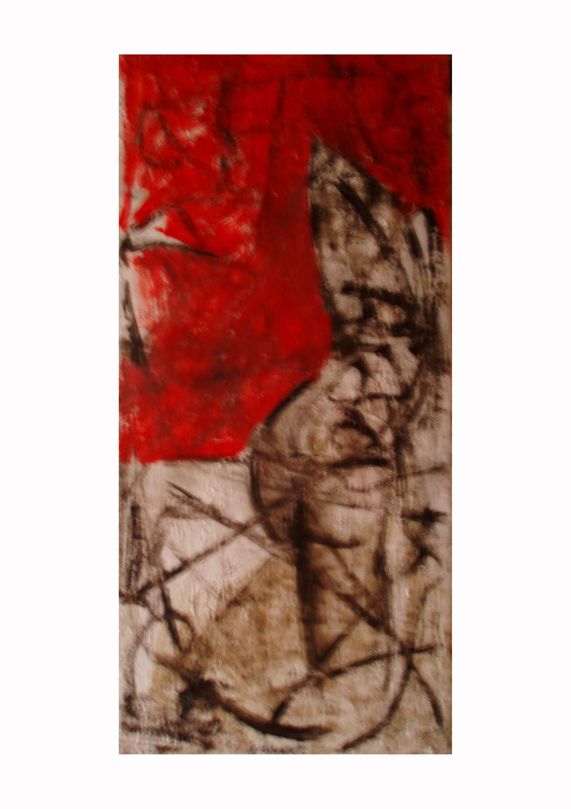
Eva, 2002

Paisaje lunar, 2002
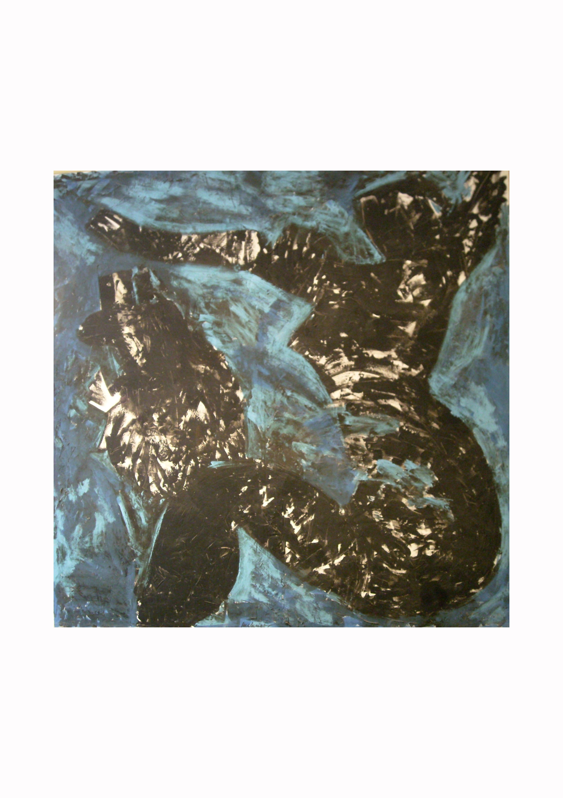
Quimera, 2002

Mujeres desnudas, 2004

La leyenda de Midas, 2005

La mujer del rebozo, 2005
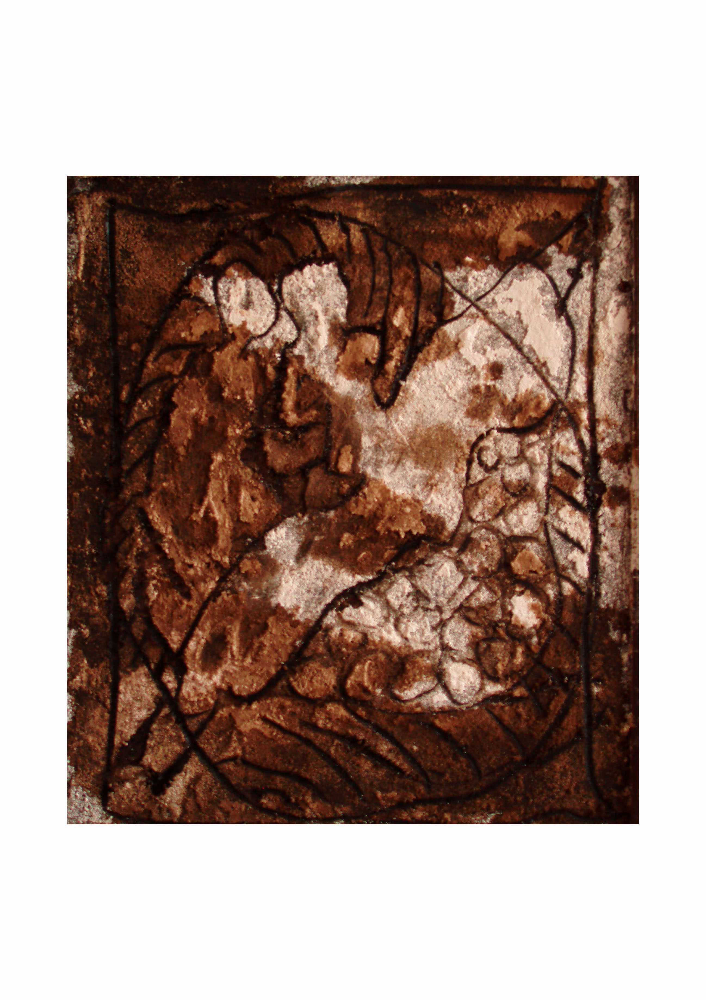
Tango, 2005

Familia rusa en navidad, 2006
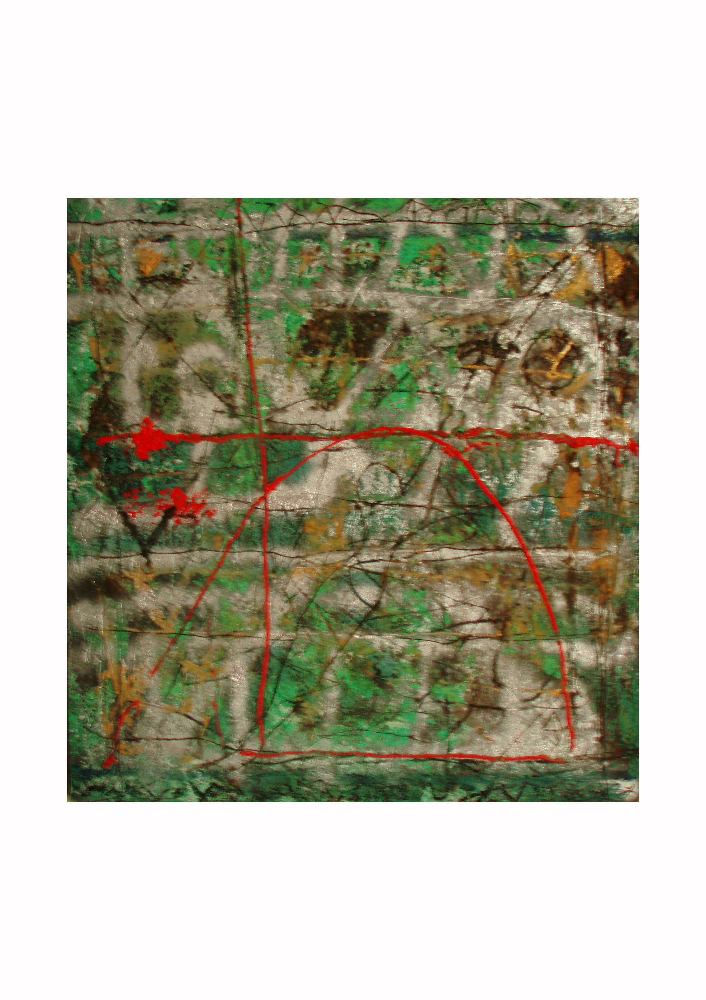
Hipérbole, 2006

La vieja de Ukrania, 2006

En el bosque, 2010
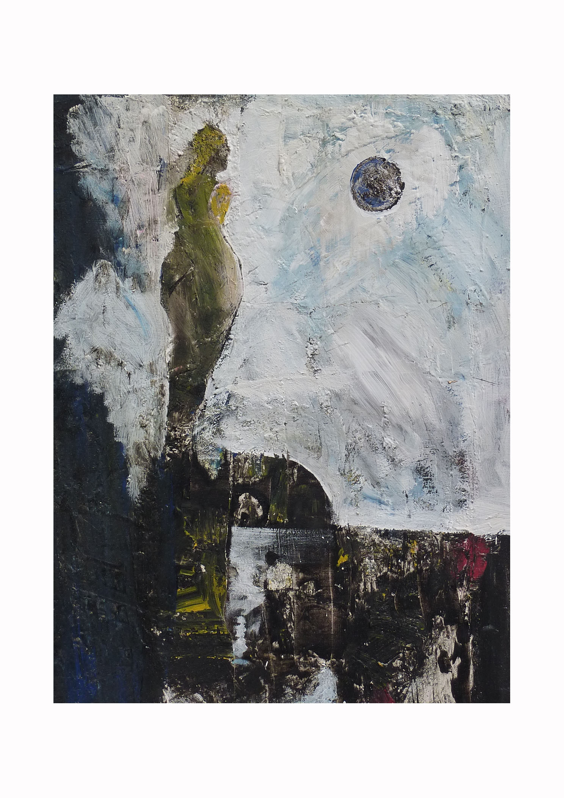
Recuerdo, 2010
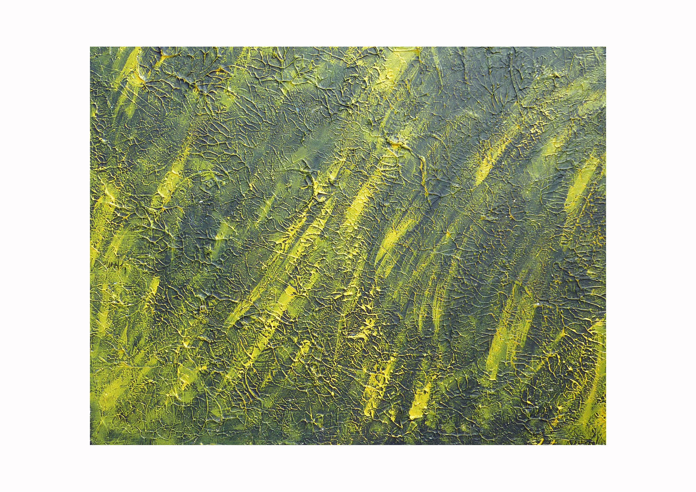
Tropical, 2010

Amada mía, 2011

BESTIARIO, 2011

CARTA NO ENVIADA, 2011

DE CINE, 2011

DOS AMIGAS, 2011

EL ASTRONOMO, 2011

EL GOLFISTA, 2011

El Penique, 2011

EL SUDOR DE LOS CABALLOS, 2011

Obra 1071, 2011

Interior de la Lámpara, 2011

LA EMIGRANTE, 2011

LA PASIÓN ROJA, 2011

Luces y Sombras, 2011

Otello, 2011

Paisaje Alterado, 2011

Paisaje Americano, 2011

Paseo por París, 2011

PATRICIO, 2011

TARDE DE VERANO, 2011

TORMENTA EN EL PARNASO, 2011

VENCANTADORAS DE SERPIENTES, 2011
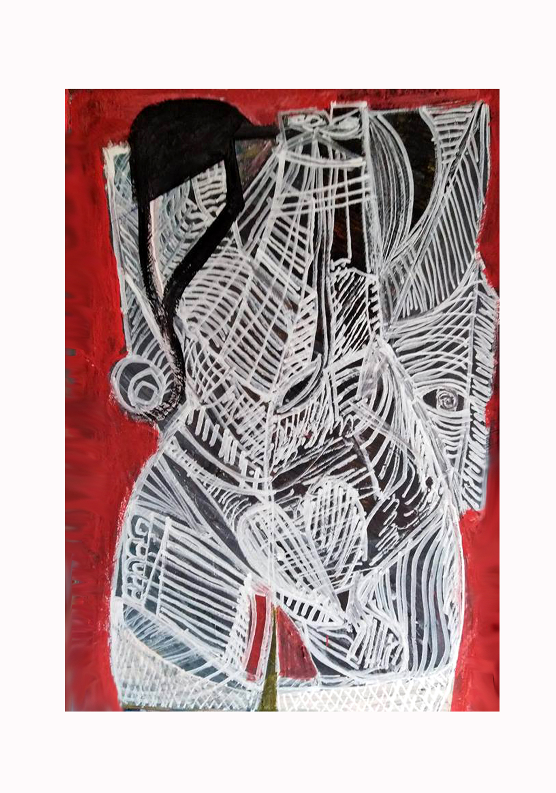
Andróginon, 2018
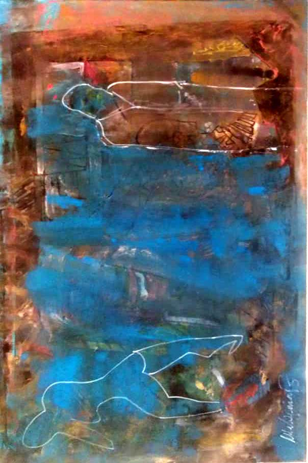
Cuadro El Viejo, 2018

Déjala que baile, 2018

La mujer marcada, 2018

Maternidad olgiska, 2018

Mujer con perra, 2018

Punto de inflexión, 2018

El joven, 2019

Escena del crimen, 2019

La bella, 2019

Los emigrantes, 2019

The toilette / La bañera, 2019

El detalle, 2021

Un sueño, 2021